Image Warping and Mosaicing
CS 194 - Project 7A + 7B - Kuriakose Sony Theakanath
Overview (7A)
The goal of this assignment was to implement image mosaicing by registering, projective warping, resampling, and compositing the two images. On the way we would learn how to compute homographies and how to use them to warp images.
Taking Pictures (7A)
I focused on three areas. One in my apartment living room (portrait), one in my bedroom (landscape), and one in Berkeley campus (portrait).
Room Picture #1
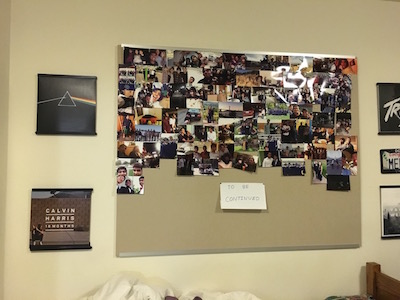
Room Picture #2
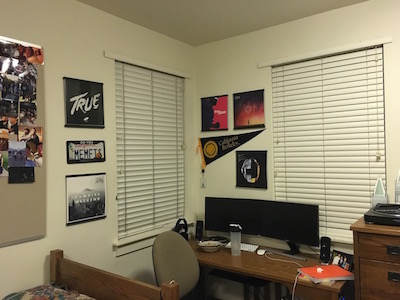
Channing Bowditch #1
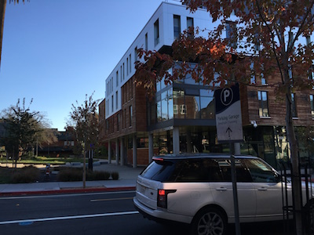
Channing Bowditch #2
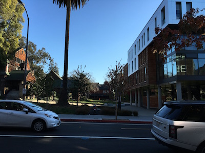
Berkeley Campus #1
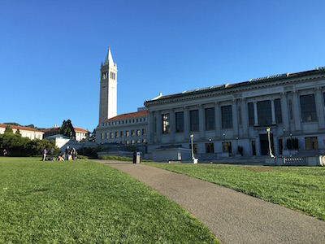
Berkeley Campus #2
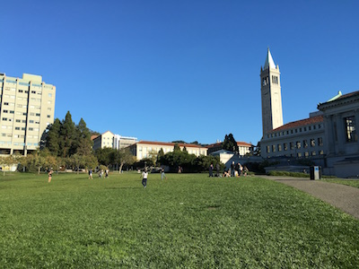
Algorithm (7A)
At first when we shoot the pictures, we have to recover the parameters of the transformation between each pair of the images. We have to use the equation p' = Hp, and H is a 3x3 matrix with 8 degrees of freedom (so that we can warp the images accordingly). We have to establish point correspondences so that the algorithm knows what exactly to warp. To do this we use cv2's library to establish point correspondences and feature match (something we will manually implement in part B of the project).
After this we will warp the images using the recovered homography from the initial part. This will return the warped images so that we can stitch them together. After getting these we can blend the images into a mosaic.
Image Rectification (7A)
Let's look at two examples of image rectification!
Room Picture
Room Rectified
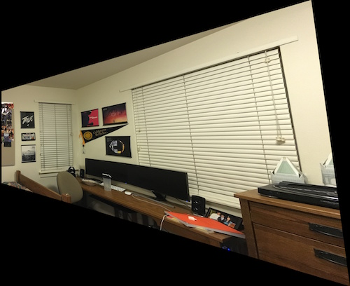
Berkeley
Berkeley Rectified
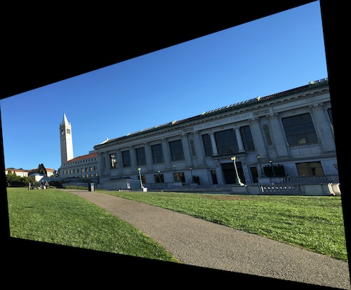
Results (7A)
Now let's look at the results of the images!
Room Stitched
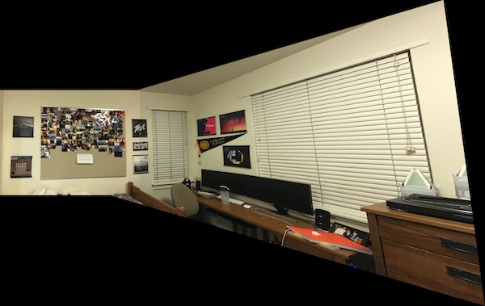
Channing Bowditch Stitched
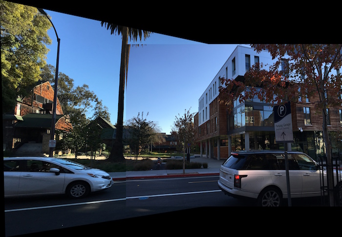
Memorial Glade Stitched
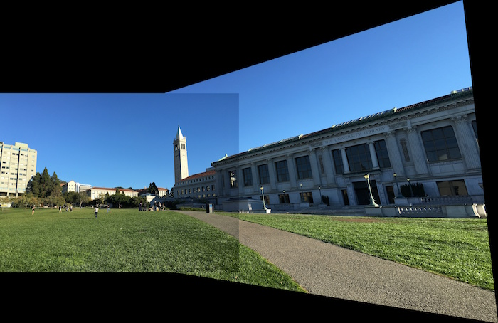
These came really really awesomely!
Bell and Whistles: RANSAC (7A)
I used cv2's auto finding of feature points in the two images and then I matched up the two points in the images. I then applied the RANSAC algorithm as detailed in the paper: http://www.cs.columbia.edu/~belhumeur/courses/compPhoto/ransac.pdf. The issue with this algorithm was that since we select a random selection of points and then continue to improve the result after X amount of times, we get a different result every time. Let's look at some sample images!
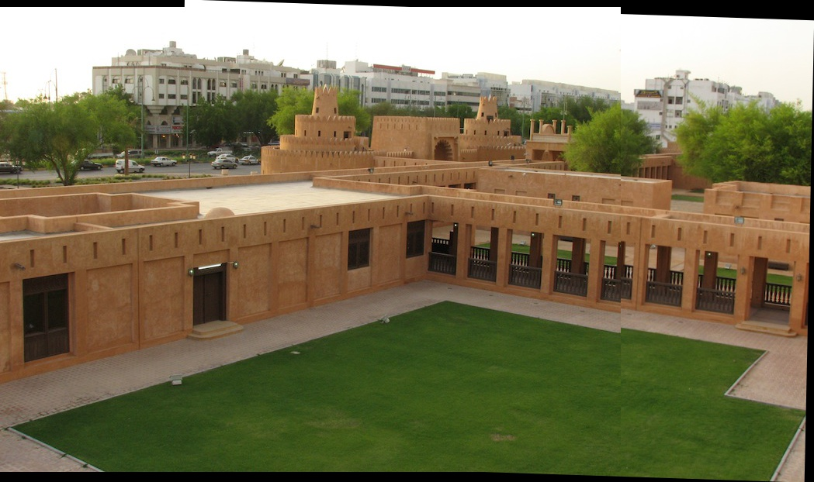
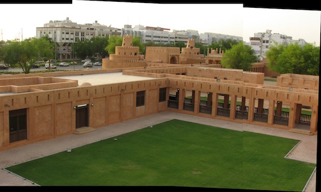
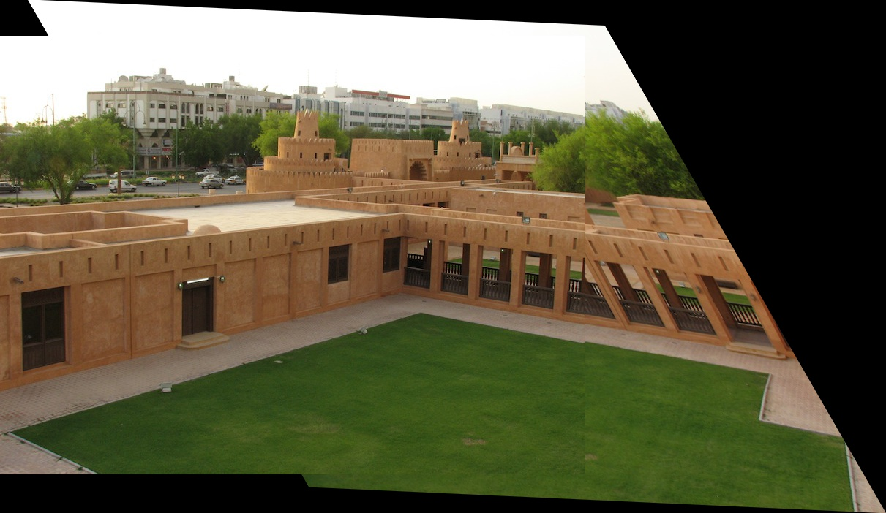
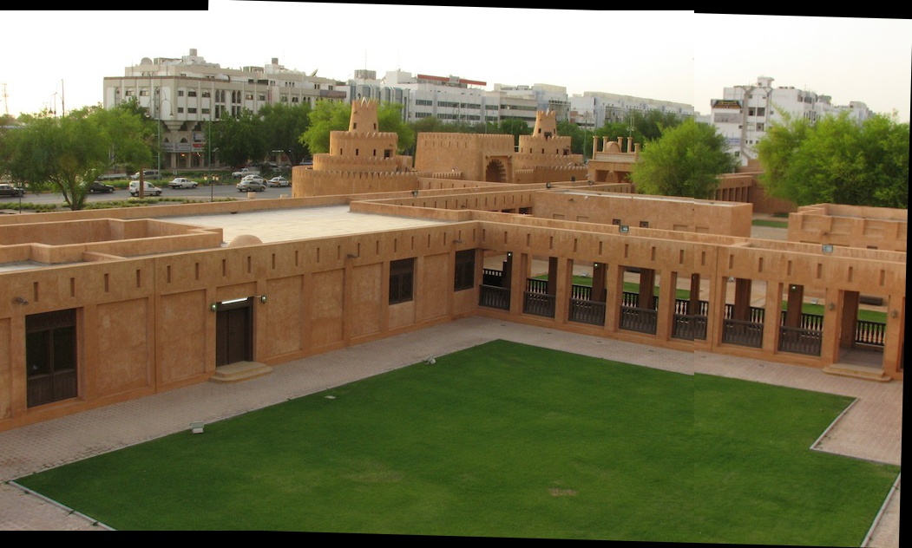
As seen here the last image turned out well, but this took 10 tries to get the best image. Some turned out pretty poorly as well. This shows how random the algorithm is at times since we pick a selection of points from about 400 features matched.
Conclusion (7A)
This was a super cool project. I learned how to warp images and learn the idea of homographies. I now gained an understanding of how panaormas work.
Overview (7B)
Now that we learned how to manually stitch the images, we are now going to automatically detect feature points in the image and then stitch the image based on that. For 7B we will be following the paper described by Brown et al. To achieve this we will be applying several methods (MOPS, ANMS, RANSAC), described in higher detail below.
Harris Interest Point Dectector (7B)
In order to find similar aspects of several images, we have to find the feature points of each image. To do this we use the Harris Interest Point detector as described by the paper: “Multi-Image Matching using Multi-Scale Oriented Patches” by Brown et al. To get an accurate stitching, we ran the algorithm to get around 1000 feature points. The feature points detected are described by the blue dots as seen in the image below.
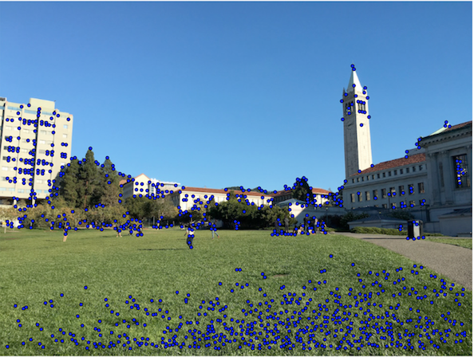
ANMS, SIFT, Feature Matching (7B)
The Harris interest point dectector works well in order to find several describing points on an image, but the issue is that we might not get an evenly distributed of feature points. Some of them may be clumped around a certain area or we might just want to reduce the amount of points so that computation would be easier. To do this we implement ANMS or Adaptive Non-Maximal Supression as described by Brown et al.
The idea behind this algorithm is that interest points are supressed based on the corner strength, and those that are a maximum in a neighbourhood of a radius r, are retained. In theory this would mean our Harris algorithm would have r = 0. When we run the algorithm to keep 150 of the highest points, we get the image below as a result.
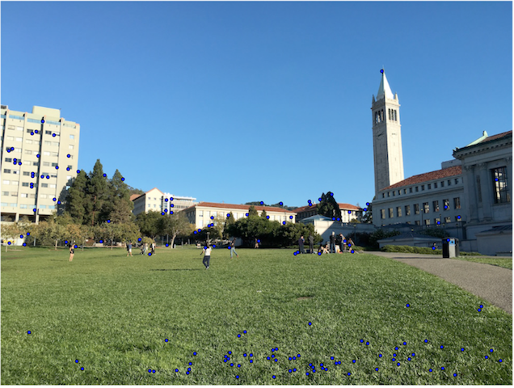
As seen by this the points are more evenly distributed, thus allowing us to compute our matching points quickly.
After we supress an x amount of points, we have to extract descriptors for each point. This would allow us to have more of a reliable and efficent matching of features across images. Several methods have been developed for this, but Brown detailed that SIFT works the best for the feature descriptor extraction. The algorithm works as follows: we sample a 8 x 8 patch of pixels around the interst point, using a spacing of 5 pixels between samples. The descriptor vector is then normalised so that the mean is 0 and the STD is 1. We then preform a Haar wavelet transform on the 8 x 8 descriptor patch d.
After we apply SIFT onto the images provided, we move on to feature matching between the images. To do this we use MOPS. The idea is taht we find a set of canidate feature matches using an approximate nearest neighbour algorithm, and then we refine matches using an outlier rejection procedure. Once we do this, we apply RANSAC, as described in the next section.
RANSAC (7B)
Lastly, we apply RANSAC onto the remaining points as detailed on the previous section. The idea behind RANSAC is that we take points randomly on a given loop, and then find pairs of features that look similar. If they are a good match, then they are used to update the homography estimate, else we move on to another set of random 4 points. After we get our homography estimate, we can now combine some images!
Results! (7B)
Now that I've probably bored you with my report, let's get to looking at some pretty images!!!
Berkeley Auto
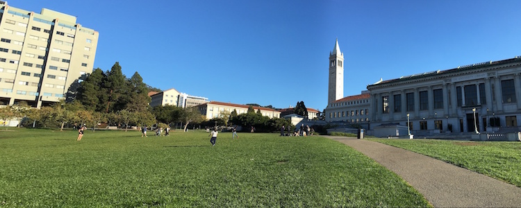
Apartment Auto
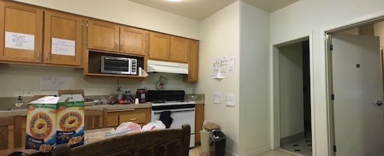
Structure Auto
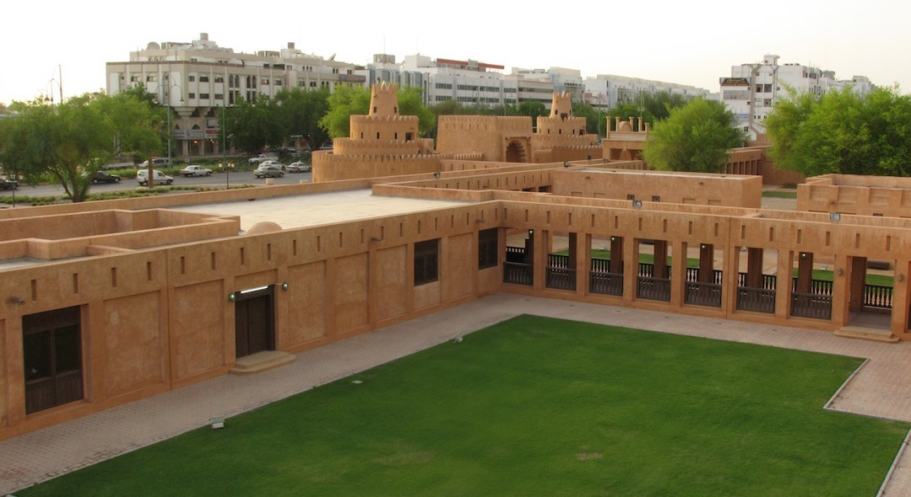
Compared to the results in 7A, it turned out pretty well! The seam is almost invisible (aside from a few artifacts).
Bell and Whistles: Cylindrical Mapping (7B)
Since the view of Berkeley was wide, it's better to use a cylindrical mapping. To do this I transformed both of the images to a cylinder and then stitched them straight. This came out even better!
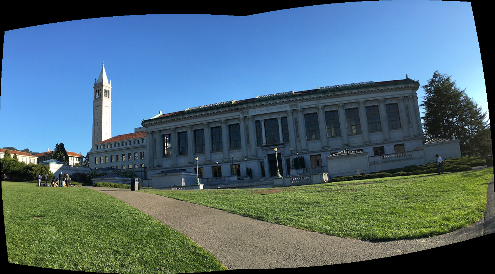
Bell and Whistles: 360 Panorama (7B)
I just came home and decided to stitch all of my images together. To do this I stitched them all normally and then warped the final image around a circle. I couldn't quite get the 360 but it turned out great!
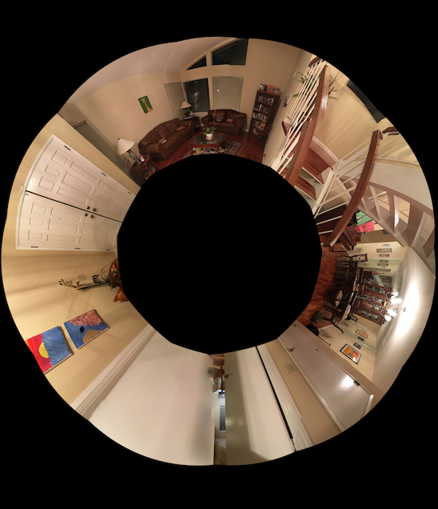
Conclusion (7B)
After learning how to automatically detect feature points, it didn't seem as bad as I thought. I realize a lot of image techniques build upon simple ideas; once we learn how to manipulate those simple ideas, we can learn how to develop something as complex as auto-stitching!